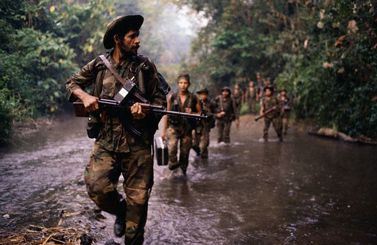
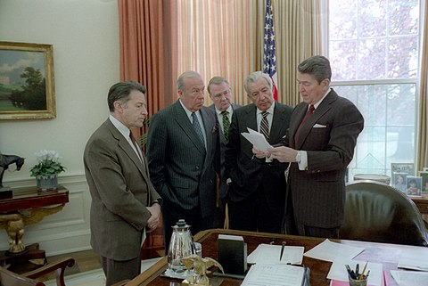
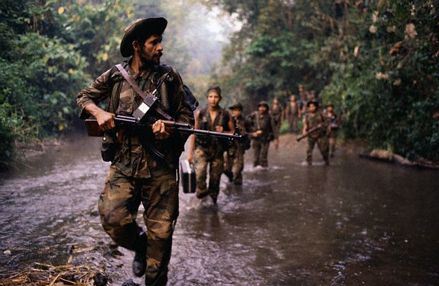
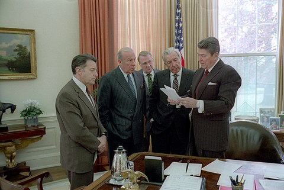

Iran Contra Scandal Timeline
July 1979- Sandinistas guerrillas overthrow a right-wing dictatorship in Nicaragua
December 1981- Reagan signs an executive order to authorize a covert CIA.operation to support the Contras, a right-wing rebel group, seeking to overthrow the leftist Sandinista government of Nicaragua.
1982-1984- Evidence of U.S. efforts to overthrow the Sandinistas leaks out in the press, including C.I.A. sabotage manuals. Congress passes Boland Amendments, barring the use of federal money to overthrow the Nicaraguan government.
1983- Hezbollah, a political paramilitary group backed by Iran, begins taking hostages in Lebanonto protest the imprisonment by American-backed governments of their allies in other parts of the Middle East.
February 1985- Reagan approves National Security Advisor Robert McFarlane's idea to negotiate with Iran for the release of Hezbollah's hostages.
September 1985- Reagan administration officials secretly negotiate to sell weapons to Iran in exchange for help securing the release of American hostages in Lebanon.
April 1986- Oliver North, now National Security Adviser, proposes diverting $12 million from the sale of weapons to Iran to fund the Contras in Nicaragua
November 1986- The Attorney General discloses the Iran-Contra connection Reagan announces the firing of North and the resignation of other officials involved in the scandal.
1987-1992- Congress holds a series of investigations, brings down indictments and hears appeals. In December 1992, President George H. W. Bush pardons six people involved in the scandal, including McFarlane.